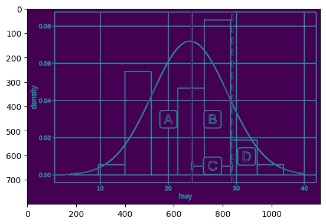

Content makes prediction more accurate
9.1%
lower MSE
Research demo
Select a model to see the information it receives and the quiz-score prediction it makes.
Actual student performance
Question being predicted
Which labeled value is closest to the center of the distribution?
Data provided to the model
No textbook-content features are provided.
Question image context

532 detected lines · 58 visual regions · 1 question image
Question text context
Question text + question image context
Predicted student score
72%Absolute standardized ridge coefficients · full model
Larger values indicate features with stronger influence on the model's predictions. These coefficients describe correlations, not what causes student performance.
Held-out chapter · new curriculum
8.7% lower error when using question text featuresWhy this matters
Question text and question images contain useful context about how students will perform. This experiment suggests that future student performance prediction models should incorporate content from the questions into the models they develop.